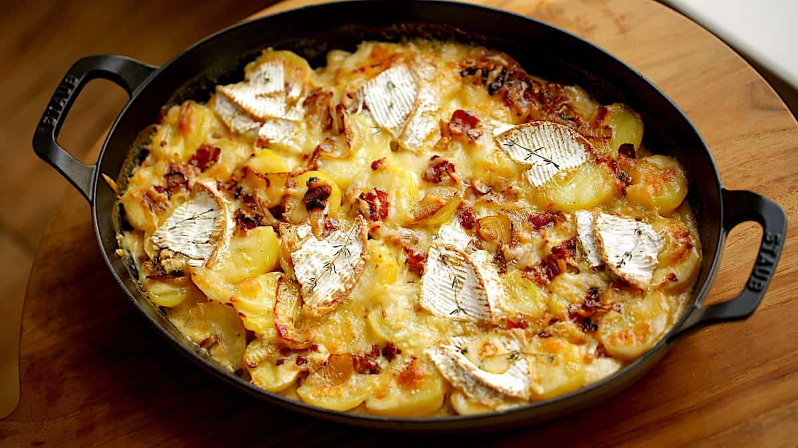

Tartiflette

The French Réconfort
This is definetly my favorite winter recipe and comes straight from the French Alps. It's full of cheese, cream, lardon and potatoes.
I bet you will love it too!
The recipe is once again not that long to prepare, but probably anywhere from 1h to 1h30 with the cooking.
Bon appetit!
Ingredients
- pepper
- salt
- oil
- reblochon
- onion
- potatoes
- lardon
- garlic
Recipe
- Peel, cut and rince the potatoes
- Cook onions in oil until tender
- Add potatoes until golden on all sides
- Add lardon
- Cut reblochon in two
- press garlic everywhere on the oven dish
- Add half of the mix to the dish, then half of the reblochon then rest of the mix and the other half on top
- Cook for 20 minutes
- .... Voila!